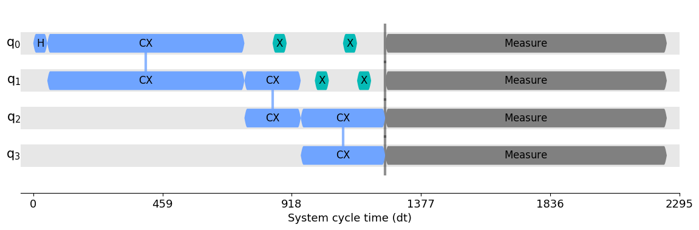
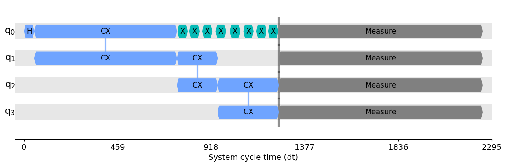

Utilities for running research experiments with Qiskit¶
- class CombineRuns(gate_names)[source]¶
Combine consecutive gates of same type.
This works with Parameters whereas other transpiling passes do not.
- Parameters:
gate_names (
List[str]) – list of strings corresponding to the types of singe-parameter gates to combine.
- class PauliTwirl(gates_to_twirl=None, seed=None)[source]¶
Add Pauli twirls.
- Parameters:
gates_to_twirl (
Optional[Iterable[str]]) – Names of gates to twirl. The default behavior is to twirl all supported gates.seed (
Optional[Any]) – Seed for the pseudorandom number generator.
- class PeriodicDynamicalDecoupling(durations, base_dd_sequence, qubits=None, base_spacing=None, avg_min_delay=None, max_repeats=1, skip_reset_qubits=True, pulse_alignment=1, extra_slack_distribution='middle')[source]¶
Dynamical decoupling insertion pass.
This pass works on a scheduled, physical circuit. It scans the circuit for idle periods of time (i.e. those containing delay instructions) and inserts a DD sequence of gates in those spots. These gates amount to the identity, so do not alter the logical action of the circuit, but have the effect of mitigating decoherence in those idle periods.
This pass will attempt to repeat the DD sequence as many times as possible up until
max_repeatsrepetitions has been met, subject to the constraint that the average delay between each gate in a DD sequence is greater thanavg_min_delay. The average delay is calculated by dividing the delay time by the total number of gates in a sequence.As a special case, the pass allows a length-1 sequence (e.g. [XGate()]). In this case the DD insertion happens only when the gate inverse can be absorbed into a neighboring gate in the circuit (so we would still be replacing Delay with something that is equivalent to the identity). This can be used, for instance, as a Hahn echo.
This pass ensures that the inserted sequence preserves the circuit exactly (including global phase).
import numpy as np from qiskit.circuit import QuantumCircuit from qiskit.circuit.library import XGate from qiskit.transpiler import PassManager, InstructionDurations from qiskit.transpiler.passes import ALAPScheduleAnalysis, PadDynamicalDecoupling from qiskit.visualization import timeline_drawer circ = QuantumCircuit(4) circ.h(0) circ.cx(0, 1) circ.cx(1, 2) circ.cx(2, 3) circ.measure_all() durations = InstructionDurations( [("h", 0, 50), ("cx", [0, 1], 700), ("reset", None, 10), ("cx", [1, 2], 200), ("cx", [2, 3], 300), ("x", None, 50), ("measure", None, 1000)] )
# balanced X-X sequence on all qubits dd_sequence = [XGate(), XGate()] pm = PassManager([ALAPScheduleAnalysis(durations), PadDynamicalDecoupling(durations, dd_sequence)]) circ_dd = pm.run(circ) timeline_drawer(circ_dd)
# Uhrig sequence on qubit 0 n = 8 dd_sequence = [XGate()] * n def uhrig_pulse_location(k): return np.sin(np.pi * (k + 1) / (2 * n + 2)) ** 2 spacing = [] for k in range(n): spacing.append(uhrig_pulse_location(k) - sum(spacing)) spacing.append(1 - sum(spacing)) pm = PassManager( [ ALAPScheduleAnalysis(durations), PadDynamicalDecoupling(durations, dd_sequence, qubits=[0], spacing=spacing), ] ) circ_dd = pm.run(circ) timeline_drawer(circ_dd)
Note
You may need to call alignment pass before running dynamical decoupling to guarantee your circuit satisfies acquisition alignment constraints.
Dynamical decoupling initializer.
- Parameters:
durations (
InstructionDurations) – Durations of instructions to be used in scheduling.base_dd_sequence (
List[Gate]) – Base sequence of gates to apply repeatedly in idle spots.qubits (
Optional[List[int]]) – Physical qubits on which to apply DD. If None, all qubits will undergo DD (when possible).base_spacing (
Optional[List[float]]) – A list of spacings between the DD gates. The available slack will be divided according to this. The list length must be one more than the length of base_dd_sequence, and the elements must sum to 1. If None, a balanced spacing will be used [d/2, d, d, …, d, d, d/2].avg_min_delay (
Optional[int]) – A duration such that delay time between gates will not be lower than this. If None, then this is set equal topulse_alignmentmax_repeats (
int) – Will attempt to repeat the DD sequence this number of times, provided that theavg_min_delaycondition is metskip_reset_qubits (
bool) – If True, does not insert DD on idle periods that immediately follow initialized/reset qubits (as qubits in the ground state are less susceptile to decoherence).pulse_alignment (
int) – The hardware constraints for gate timing allocation. This is usually provided frombackend.configuration().timing_constraints. If provided, the delay length, i.e.spacing, is implicitly adjusted to satisfy this constraint.extra_slack_distribution (
str) –The option to control the behavior of DD sequence generation. The duration of the DD sequence should be identical to an idle time in the scheduled quantum circuit, however, the delay in between gates comprising the sequence should be integer number in units of dt, and it might be further truncated when
pulse_alignmentis specified. This sometimes results in the duration of the created sequence being shorter than the idle time that you want to fill with the sequence, i.e. extra slack. This option takes following values.”middle”: Put the extra slack to the interval at the middle of the sequence.
”edges”: Divide the extra slack as evenly as possible into intervals at beginning and end of the sequence.
- Raises:
TranspilerError – When invalid DD sequence is specified.
TranspilerError – When pulse gate with the duration which is non-multiple of the alignment constraint value is found.
- class RZXWeylDecomposition(*args, **kwargs)[source]¶
Decompose XX, YY, ZZ rotation gates using the Weyl Chamber decomposition, this version accepts Parameter values.
- class RZXtoEchoedCR(backend)[source]¶
Class for the RZXGate to echoed cross resonance gate pass. The RZXGate is equivalent to the SECR gate plus a second XGate on the control qubit to return it to the initial state.
- class SECRCalibrationBuilder(instruction_schedule_map=None, qubit_channel_mapping=None)[source]¶
Creates calibrations for SECRGate(theta) by stretching and compressing Gaussian square pulses in the CX gate. This is done by retrieving (for a given pair of qubits) the CX schedule in the instruction schedule map of the backend defaults. The CX schedule must be an echoed cross-resonance gate optionally with rotary tones. The cross-resonance drive tones and rotary pulses must be Gaussian square pulses. The width of the Gaussian square pulse is adjusted so as to match the desired rotation angle. If the rotation angle is small such that the width disappears then the amplitude of the zero width Gaussian square pulse (i.e. a Gaussian) is reduced to reach the target rotation angle. Additional details can be found in https://arxiv.org/abs/2012.11660.
Note: this is modified from RZXCalibrationBuilder in qiskit.transpiler.passes.calibrations
Initializes a SECRGate calibration builder.
- Parameters:
instruction_schedule_map (
Optional[InstructionScheduleMap]) – TheInstructionScheduleMapobject representing the default pulse calibrations for the target backendqubit_channel_mapping (
Optional[List[List[str]]]) – The list mapping qubit indices to the list of channel names that apply on that qubit.
- Raises:
QiskitError – if open pulse is not supported by the backend.
- get_calibration(node_op, qubits)[source]¶
Builds the calibration schedule for the SECRGate(theta).
- Parameters:
node_op (
Instruction) – Instruction of the SECRGate(theta). I.e. params[0] is theta.qubits (
List) – List of qubits for which to get the schedules. The first qubit is the control and the second is the target.
- Returns:
The calibration schedule for the SECRGate(theta).
- Return type:
schedule
- Raises:
QiskitError – If the control and target qubits cannot be identified, or the backend does not support cx between the qubits.
TranspilerError – If all Parameters are not bound.
- static rescale_cr_inst(instruction, theta, sample_mult=16)[source]¶
- Parameters:
instruction (
Play) – The instruction from which to create a new shortened or lengthened pulse.theta (
float) – desired angle, pi/2 is assumed to be the angle that the pulse in the given play instruction implements.sample_mult (
int) – All pulses must be a multiple of sample_mult.
- Returns:
- The play instruction with the stretched compressed
GaussianSquare pulse.
- Return type:
qiskit.pulse.Play
- Raises:
QiskitError – if the pulses are not GaussianSquare.
- class XXMinusYYtoRZX(*args, **kwargs)[source]¶
Transformation pass to decompose XXMinusYYGate to RZXGate.
- class XXPlusYYtoRZX(*args, **kwargs)[source]¶
Transformation pass to decompose XXPlusYYGate to RZXGate.
- add_pulse_calibrations(circuits, backend)[source]¶
Add pulse calibrations for custom gates to circuits in-place.
- Return type:
None
- cr_scaling_passes(backend, templates, unroll_rzx_to_ecr=True, weyl_decomp=True, force_zz_matches=True, param_bind=None)[source]¶
Yields transpilation passes for CR pulse scaling.
- Return type:
Iterable[BasePass]
- dynamical_decoupling_passes(backend, dd_str, scheduler=<class 'qiskit.transpiler.passes.scheduling.scheduling.alap.ALAPScheduleAnalysis'>)[source]¶
Yields transpilation passes for dynamical decoupling.
- Return type:
Iterable[BasePass]